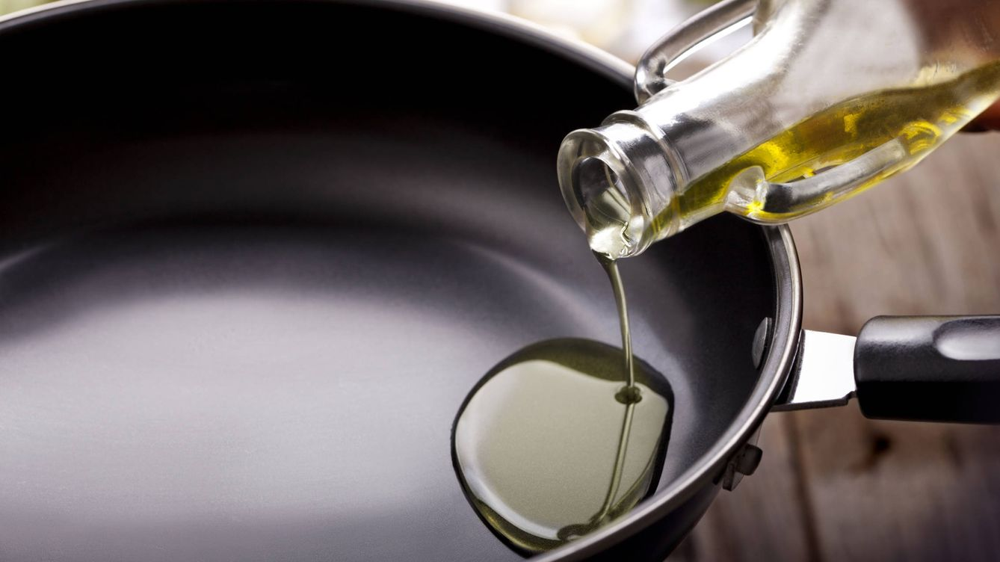
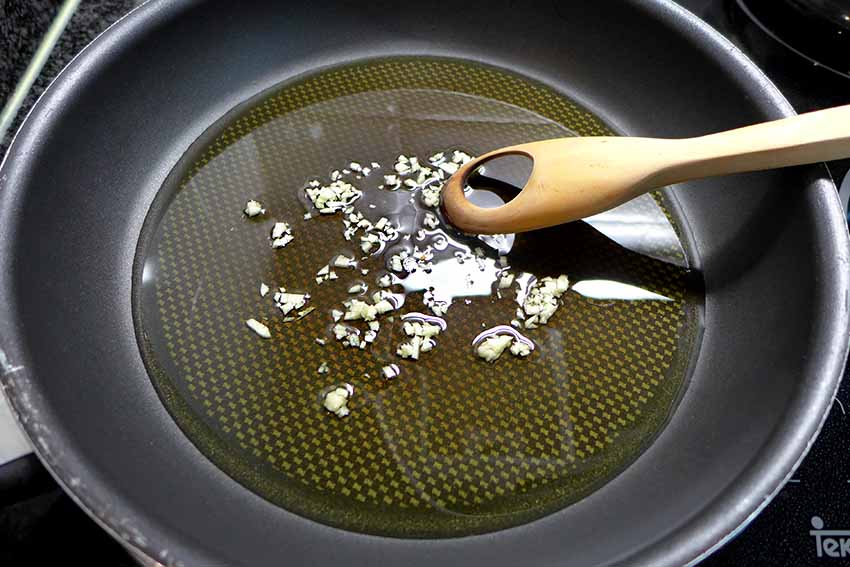
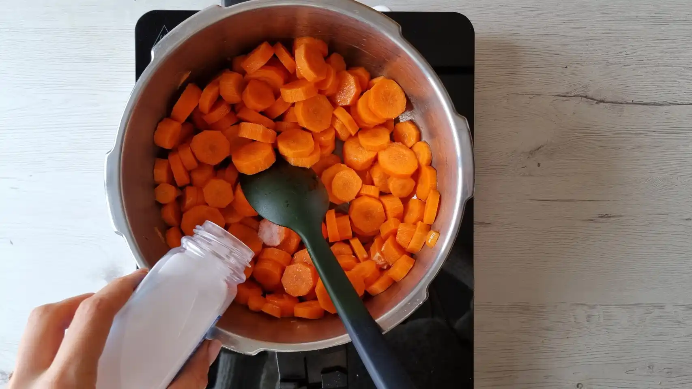
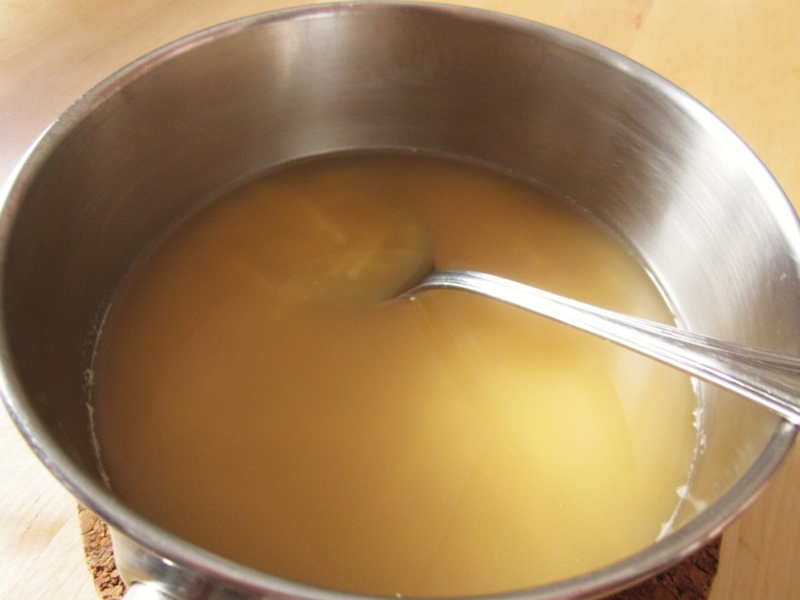
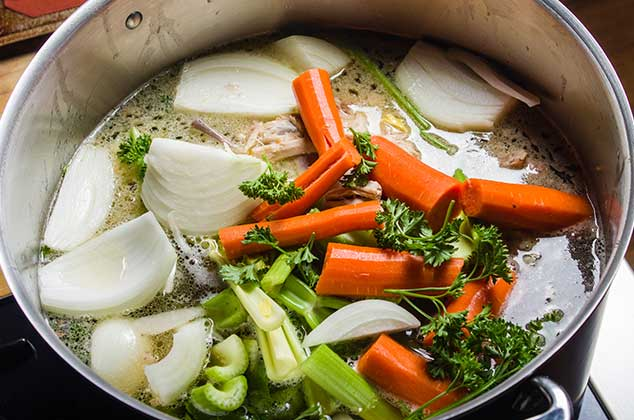
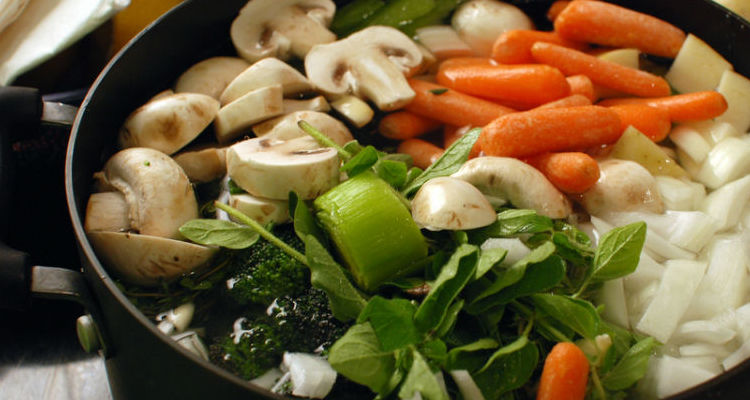

Ingredientes
- 2 zanahorias, peladas y cortadas en rodajas.
- 2 tallos de apio, cortados en trozos.
- 1 cebolla, picada.
- 2 dientes de ajo, picados.
- 1 litro de caldo de verduras (aproximadamente 4 tazas).
- 2 cucharadas de aceite de oliva.
- Sal y pimienta al gusto.
- 1/2 cucharadita de tomillo seco (u otras hierbas de tu elección).
- Opcionales: 1/2 taza de pasta corta (como fideos o arroz pequeño) y jugo de medio limón.
Paso a paso
- Lava, pela y corta las verduras en trozos.
- En una olla grande, calienta el aceite de oliva o la mantequilla a fuego medio.

- Sofríe el ajo y las cebollas hasta que estén tiernos y fragantes.

- Añade las zanahorias y el apio, y cocina durante unos minutos.

- Vierte el caldo en la olla y lleva a ebullición.

- Reduce el fuego y deja cocinar a fuego lento durante 20-30 minutos.
- Añade las demás verduras y las hierbas a la sopa y cocina hasta que estén tiernas.

- Sirve caliente y disfruta de tu sopa de verduras casera.

Resultado final
Disfruta de esta receta.
Volver al principio